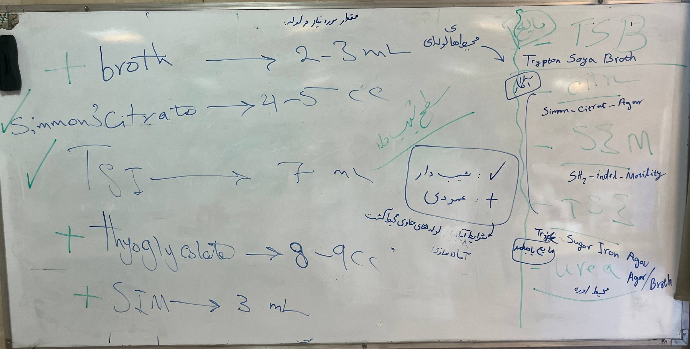
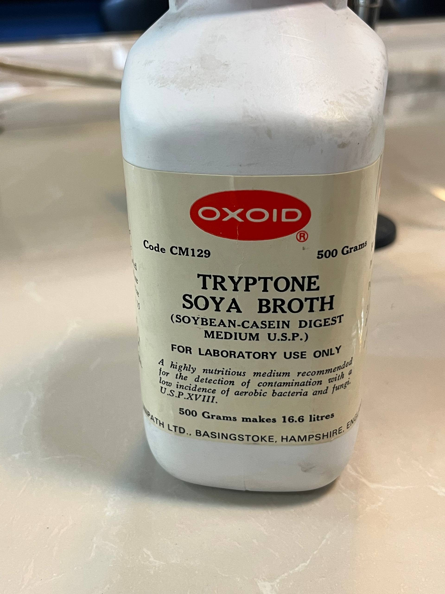
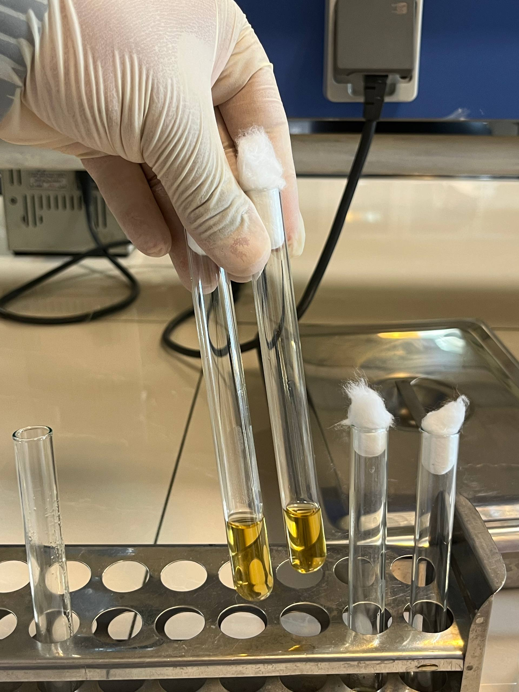
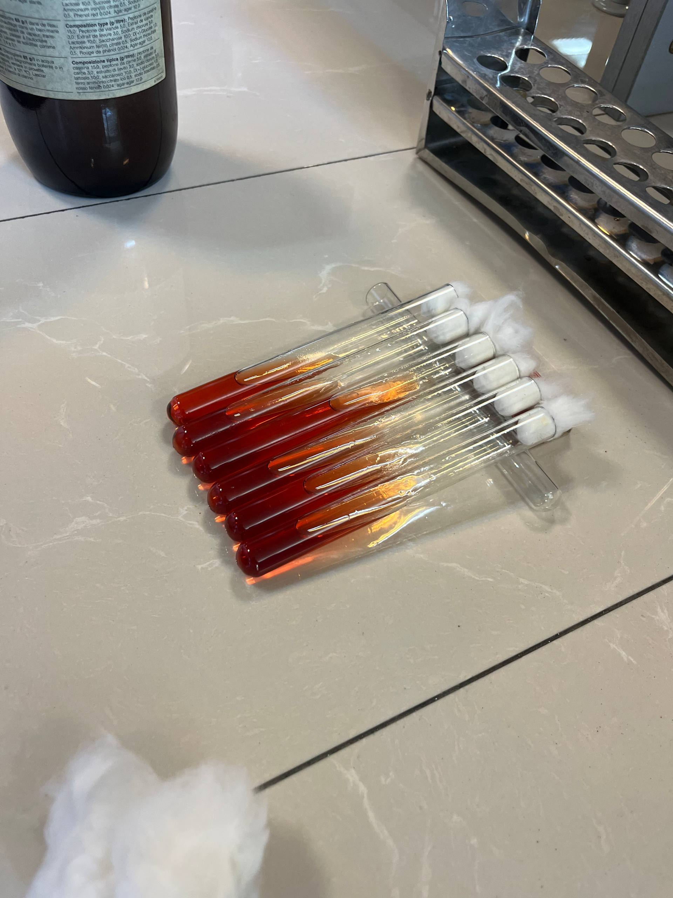
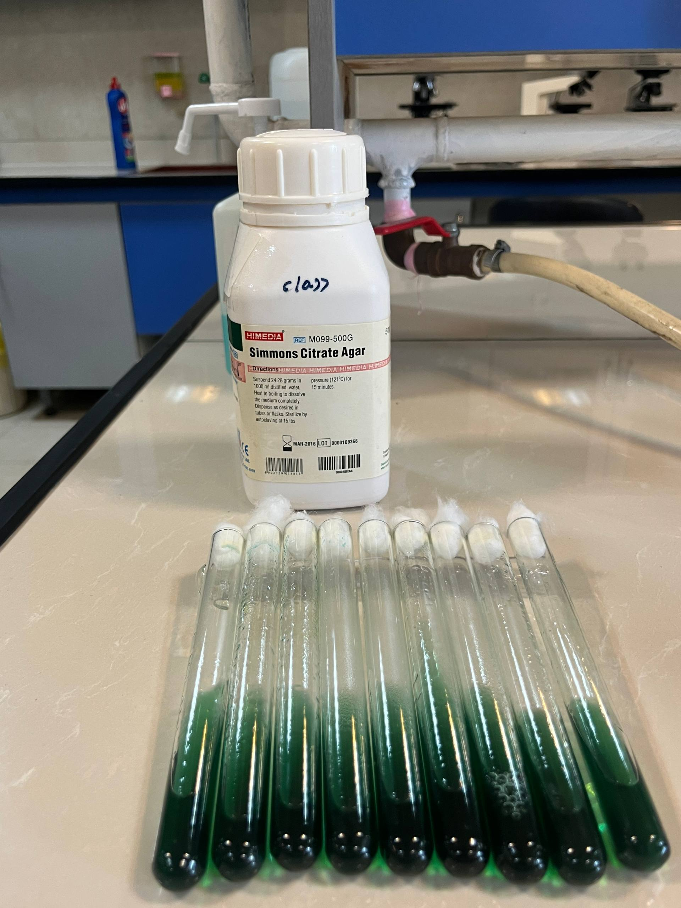

شبنم رضاپور
کسی که PDFها را راضی کرد محتوایشان را بیکموکاست لو بدهند.
این جزوه با استفاده از جزوهساز پاپیروس و به صورت خودکار تولید شده است. ممکن است شامل خطا یا برداشت نادرست باشد و نیازمند بررسی و بازبینی مجدد است.
ادیتور😊💕:(محیط کشت، گواهی است بر این حقیقت که هیچ موجودی به تنهایی رشد نمیکند؛ نه میکروب، نه آدم. شاید این بیانگر این حقیقت است که "همه نیازمندیم! نیازمند محیطمان" شاید رشد،همان آمیخته فرد و محیط است ،هردو نیازمند بهم🦠🧫)
در این گفتار، استاد تفاوت کار با محیطهای کشت آگاردار در پلیت و آمادهسازی محیط کشت در لوله را مطرح میکند؛ از جمله انواع محیطها، حجم موردنیاز، روش آمادهسازی و استریلکردن، انتقال محیط به لولهها، ایجاد سطح شیبدار در TSI و تمرین عملی ساخت محیط کشت.
موضوع بحث، انواع محیط کشت و تفاوت کار این جلسه با جلسهٔ قبل است. جلسهٔ قبل محیط کشت آگاردار را برای پخشکردن در پلیت آماده میکردند؛ اما این جلسه محیط کشت را در لوله میریزند و آماده میکنند.
محیطهای کشت بر اساس آگاردار بودن یا نبودن تقسیمبندی میشوند.
جلسهٔ قبل با محیطهای کشت آگاردار کار کردند که در پلیت پخش میشوند. از روی نام محیط میتوان آموخت که ظرف مناسب آن چیست. برای نمونه، محیطهای زیر در پلیت قرار میگیرند:
برخی محیطهای آگاردار هم در لوله قرار میگیرند؛ تشخیص این موارد با تجربه به دست میآید.
| دستهبندی محیط کشت بر پایهٔ شکل آمادهسازی یا حالت | ویژگی گفتهشده در درس |
|---|---|
| محیط آگاردار در پلیت | در پلیت پخش میشود؛ جلسهٔ قبل با این نوع کار کردند. |
| محیط آگاردار در لوله | برخی محیطهای آگاردار در لوله قرار میگیرند؛ تشخیص آنها با تجربه به دست میآید. |
| محیط لولهای مایع (liquid) | یکی از حالتهای محیط کشت لولهای است. |
| محیط لولهای جامد (solid) | یکی از حالتهای محیط کشت لولهای است. |
| محیط لولهای نیمهجامد (semisolid) | وقتی مقدار آگار به حالت بینابینی برسد، محیط نیمهجامد میشود. |
گروههایی که کار میکنند باید با محیط کشت خود دقیق کار کنند و بقیهٔ کلاس کارشان را مشاهده و نظارت کنند. همه باید همهٔ محیطها را یاد بگیرند تا بعداً بتوانند آنها را بسازند. آموزش بهصورت گروهبهگروه انجام میشود، اما همهٔ کلاس باید روند کار را دنبال کند.
روی ظرف محیط کشت:
به ظرف «قوطی» یا «شیشه» نگویند، بلکه آن را Batch(ظرف محیط کشت) بدانند. دربارهٔ محیطهای آگاردار، باید بعداً روش توزیع (dispense) را یاد بگیرند.
محیطهای کشت لولهای ممکن است مایع (liquid) یا جامد (solid) باشند. اگر مقدار آگار به حالت بینابینی برسد، محیط نیمهجامد (semisolid) میشود؛ بنابراین، در کار با لوله هر سه حالت مطرح است.
| نوشته یا حالت محیط | معنای آن در درس |
|---|---|
| broth | محیط آگار ندارد. |
| agar | محیط آگار دارد. |
| liquid | حالت مایع محیط کشت لولهای |
| solid | حالت جامد محیط کشت لولهای |
| semisolid | حالتی که مقدار آگار بینابینی باشد. |
برای هر محیط کشت باید حجم مناسب در هر لوله را بدانند:
| محیط کشت | حجم گفتهشده برای هر لوله | توضیح |
|---|---|---|
| TSI | حدود ۷ میلیلیتر یا سیسی | به صورت سطح شیب دار گذاشته تا سفت شود تنها محیط کشتی که هم سطح شیب دار هم عمق آن را میخواهیم |
| Simmons citrate | حدود ۳ تا ۴ میلیلیتر | بهاختصار citrate هم گفته میشود ،سطح شیب دار |
| SIM | حدود ۳ میلیلیتر | solid است،عمودی |
| Tryptic Soya Broth (TSB) | معمولاً ۲ تا ۳ سیسی برای محیطهای مایع | در ته لوله ریخته میشود،عمودی |
| Mueller-Hinton broth | معمولاً ۲ تا ۳ سیسی برای محیطهای مایع | در ته لوله ریخته میشود،عمودی |
| MR-VP broth | معمولاً ۲ تا ۳ سیسی برای محیطهای مایع | در ته لوله ریخته میشود،عمودی |
| Brain Heart Infusion broth | معمولاً ۲ تا ۳ سیسی برای محیطهای مایع | در ته لوله ریخته میشود،عمودی |
| thioglycollate | حدود ۸ تا ۹ میلیلیتر | با اینکه semisolid است،عمودی |
کاربرد این محیطها بعداً توضیح داده میشود.
حجم محیطی که باید ساخته شود را نمیتوان بیحساب تعیین کرد یا همیشه ۱۰۰ یا ۲۰۰ سیسی ساخت؛ مقدار موردنیاز به تعداد باکتریها و تستها و میزان مراجعه بستگی دارد. آزمایشگاهی که از صبح تا شب پنج بیمار دارد، بهاندازهٔ آزمایشگاهی که ۲۰۰ بیمار دارد محیط نیاز ندارد.
اگر گفته شود TSI آماده باشد، باید تعداد لولهها و مقدار محیط لازم را مشخص کرد. نیاز مراجعهکنندگان تعیین میکند که در آن هفته ۱۰۰ سیسی ساخته شود یا ۱۰۰۰ سیسی. دانشجو باید بتواند تناسب را رعایت کند و بداند چند لوله لازم است. وقتی supervisor شد، باید خودش مقدار ساخت را تعیین و کار را کنترل کند.
| عامل مورد توجه | ارتباط آن با مقدار محیط موردنیاز |
|---|---|
| تعداد باکتریها و تستها | مقدار محیط موردنیاز به آنها بستگی دارد. |
| میزان مراجعه | مقدار محیط را تعیین میکند؛ برای نمونه، نیاز میتواند ساخت ۱۰۰ یا ۱۰۰۰ سیسی در هفته را ایجاب کند. |
| تعداد لولههای لازم | هنگام آمادهسازی محیطی مانند TSI باید مشخص شود. |
| نقش دانشجو در آینده | هنگام supervisor شدن، باید مقدار ساخت را تعیین کند و کار را کنترل کند. |
تفاوت آمادهسازی محیط کشت لولهای و پلیتی
| روش آمادهسازی محیط کشت | ترتیب کار |
|---|---|
| پلیت | محیط را در ارلن اتوکلاو و استریل میکنند و سپس در پلیت میریزند. |
| پلیت | بعد از اتوکلاو باید صبر کرد تا دمای محیط کشت به 45 درجه برسد چون پلیت پلاستیکی است |
| لوله | نیازی به افت دما نیست و حتی میتوان به محض اتمام اتوکلاو به لوله انتقال داد |
| لوله | محیط را از ابتدا در لوله میریزند، دهانهٔ لوله را پنبه میزنند و خود لوله را اتوکلاو میکنند |
در کار امروز، محیطها در لوله ریخته میشوند. آقای پورمسعودی مرحلهبهمرحله کار را آموزش میدهد و حجم هر محیط را مشخص میکند. دانشجویان محیط را در لوله میریزند، دهانه را پنبه میزنند و لولهها را بهصورت عمودی در بسکت میگذارند. لولهها باید عمودی بمانند تا محیط نریزد؛ بسکت یا با لولهها پر میشود یا وسیلهای آنها را ثابت نگه میدارد. بسکت به اتوکلاو میرود و پس از بازگشت، کار با لولهها ادامه پیدا میکند. استریلیزاسیون بخش فعالی از کار آزمایشگاه است و باید آن را یاد بگیرند؛ آقای پورمسعودی این کار را از ابتدا تا انتها آموزش میدهد.
برای آمادهکردن محیط، ابتدا مقدار پودر را بر اساس غلظت درجشده محاسبه میکنند. برای محیطی با غلظت ۶۵ گرم در لیتر، ۱۰۰ سیسی یا ۵۰ سیسی محیط میخواهد و باید مقدار لازم را محاسبه کرد. مثلا برای 100 سی سی به 6/5 گرم پودر نیاز داریم
هنگام آمادهسازی، شعله باید از ابتدا روشن باشد؛ چرا شعله لازم است؟ استریل شدن تا فاصله 50 سانتی از شعله و این نخستین کار است. پس از رسیدن به اندازهگیری موردنظر، از ارلن ۵۰۰ سیسی استفاده کرده و پودر و اب مقطر را باهم مخلوط میکنیم. دهانهٔ ارلن با پنبه محکم بسته میشود و برای تکان دادن ارلن هنگام حرارت از گاز استفاده میکینم
تفاوت مهم کار با پلیت این است که برای محیطهای لولهای، ابتدا محیط را بین لولهها تقسیم میکنند و سپس لولهها را به اتوکلاو میفرستند؛ برای پلیتریزی، ارلن را به اتوکلاو میفرستادند.
| کار با محیط لولهای | پلیتریزی |
|---|---|
| ابتدا محیط را بین لولهها تقسیم میکنند و سپس لولهها را به اتوکلاو میفرستند. | ارلن را به اتوکلاو میفرستادند. |
| محیط آگاردار را نباید پیش از انتقال سرد کرد؛ با سردشدن میبندد و دیگر نمیتوان آن را منتقل کرد. | محیط را کمی سرد میکردند. |
محیط آگاردار را باید حرارت داد تا حل و شفاف شود. وقتی قلقل میزند، دیگر نباید آن را هم زد و باید از روی شعله برداشت. پس از جوشاندن کامل و یکنواختشدن محیط، آن را در ظرف مناسب برای انتقال به لولهها میریزند.
در پلیتریزی جلسهٔ قبل، محیط را کمی سرد میکردند؛ اما در این کار نباید صبر کرد تا محیط آگاردار سرد شود، چون با سردشدن میبندد و دیگر نمیتوان آن را منتقل کرد. پس از بیرونآوردن از اتوکلاو نیز باید پیش از سردشدن، کار با محیط انجام شود. مقدار محیط انتقالی به هر لوله با نوع محیط فرق دارد؛ برای TSI در توضیح عملی حدود ۶ تا ۷ سیسی گفته میشود و مقدار لازم برای محیطهای دیگر جداگانه مشخص خواهد شد.
TSI از محیطهای لولهای تکنیکیتر است، چون هم به عمق لازم نیاز دارد و هم به سطح شیبدار. برای ایجاد این شکل، لوله را پس از اتوکلاو و پیش از سردشدن بهصورت شیبدار قرار میدهند؛ علت نیاز به این دو بخش بعداً توضیح داده میشود.
لولهٔ اول را میتوان بهعنوان بالانس انتخاب کرد و لولههای بعدی را به همان اندازه پر کرد تا مقدارشان کموزیاد نباشد. تا وقتی چشم به حجم عادت کند، میتوان با پیپت مقدار معینی، مثلاً ۶ سیسی، در یک لوله ریخت و آن را علامتگذاری کرد تا بالانس ۶ سیسی باشد. برای محیطی که ۳ سیسی لازم دارد نیز باید بالانس جداگانه درست کرد.
| روش استفاده از بالانس | کاربرد گفتهشده |
|---|---|
| انتخاب لولهٔ اول بهعنوان بالانس | لولههای بعدی را به همان اندازه پر میکنند تا مقدارشان کموزیاد نباشد. |
| علامتگذاری حجم با پیپت | تا وقتی چشم به حجم عادت کند، میتوان مقدار معینی، مثلاً ۶ سیسی، در یک لوله ریخت و آن را علامتگذاری کرد. |
| تهیهٔ بالانس جداگانه | برای محیطی که ۳ سیسی لازم دارد، بالانس جداگانه درست میکنند. |
پس از تقسیم محیط در لولهها، دهانهها را محکم پنبه میزنند و پنبه را امتحان میکنند تا هنگام رفتوبرگشت به اتوکلاو مشکلی پیش نیاید. لولهها را در بسکت میگذارند و اتوکلاو میکنند. پس از بازگشت، اگر محیط به سطح شیبدار نیاز داشته باشد، لولهها را پیش از سردشدن در حالت مناسب قرار میدهند؛ این کار روی میز هم انجام میشود. سپس اجازه میدهند محیط کاملاً ببندد و خشک شود.
تصاویر مربو به این جلسه





| دسته یا نوشته | ویژگی یا معنای گفتهشده در درس |
|---|---|
| محیط آگاردار در پلیت | در پلیت پخش میشود؛ جلسهٔ قبل با این نوع کار کردند. |
| محیط آگاردار در لوله | برخی محیطهای آگاردار در لوله قرار میگیرند؛ تشخیص آنها با تجربه به دست میآید. |
| broth | محیط آگار ندارد. |
| agar | محیط آگار دارد. |
| liquid | حالت مایع محیط کشت لولهای |
| solid | حالت جامد محیط کشت لولهای |
| semisolid | حالتی که مقدار آگار بینابینی باشد. |
| نمونههای گفتهشده برای پلیت | EM agar، XLD agar، Blood agar و Mueller-Hinton agar |
| محیط کشت | حجم گفتهشده برای هر لوله | توضیح |
|---|---|---|
| TSI | حدود ۷ میلیلیتر یا سیسی؛ در توضیح عملی حدود ۶ تا ۷ سیسی | مقدارهای گفتهشده در transcript در بخش مربوط به TSI نیازمند بررسیاند. |
| Simmons citrate | حدود ۳ تا ۴ میلیلیتر | بهاختصار citrate هم گفته میشود |
| SIM | حدود ۳ میلیلیتر | solid است |
| Tryptic Soy Broth (TSB) | معمولاً ۲ تا ۳ سیسی | برای محیطهای مایع؛ در ته لوله ریخته میشود. |
| Mueller-Hinton broth | معمولاً ۲ تا ۳ سیسی | برای محیطهای مایع؛ در ته لوله ریخته میشود. |
| MR-VP broth | معمولاً ۲ تا ۳ سیسی | برای محیطهای مایع؛ در ته لوله ریخته میشود. |
| Brain Heart Infusion broth | معمولاً ۲ تا ۳ سیسی | برای محیطهای مایع؛ در ته لوله ریخته میشود. |
| thioglycollate | حدود ۸ تا ۹ میلیلیتر | با اینکه semisolid است |
| عامل مورد توجه | ارتباط آن با مقدار محیط موردنیاز |
|---|---|
| تعداد باکتریها و تستها | مقدار محیط موردنیاز به آنها بستگی دارد. |
| میزان مراجعه | مقدار محیط را تعیین میکند؛ ممکن است نیاز به ساخت ۱۰۰ یا ۱۰۰۰ سیسی در هفته باشد. |
| تعداد لولههای لازم | هنگام آمادهسازی محیطی مانند TSI باید مشخص شود. |
| نقش دانشجو در آینده | هنگام supervisor شدن، باید مقدار ساخت را تعیین کند و کار را کنترل کند. |
| تفاوت حجم مراجعه | آزمایشگاهی با پنج بیمار در روز بهاندازهٔ آزمایشگاهی با ۲۰۰ بیمار محیط نیاز ندارد. |
| روش | ترتیب کار |
|---|---|
| پلیت | محیط را در ارلن اتوکلاو و استریل میکنند و سپس در پلیت میریزند. |
| لوله | محیط را از ابتدا در لوله میریزند، دهانهٔ لوله را پنبه میزنند و خود لوله را اتوکلاو میکنندحجم مایع در لوله آزمایش نباید از «نصف تا حداکثر دوسوم» ارتفاع لوله بیشتر باشد. |
| کار با محیط لولهای | پلیتریزی |
|---|---|
| ابتدا محیط را بین لولهها تقسیم میکنند و سپس لولهها را به اتوکلاو میفرستند. | ارلن را به اتوکلاو میفرستادند. |
| محیط آگاردار را نباید پیش از انتقال سرد کرد، چون با سردشدن میبندد و دیگر نمیتوان آن را منتقل کرد. | محیط را کمی سرد میکردند. |
| لولهها پس از انتقال، پنبه زده میشوند و در بسکت قرار میگیرند. | محیط آگاردار برای پخشکردن در پلیت آماده میشد. |
| روش | کاربرد گفتهشده |
|---|---|
| انتخاب لولهٔ اول بهعنوان بالانس | لولههای بعدی را به همان اندازه پر میکنند تا مقدارشان کموزیاد نباشد. |
| علامتگذاری حجم با پیپت | تا وقتی چشم به حجم عادت کند، میتوان مقدار معینی، مثلاً ۶ سیسی، در یک لوله ریخت و آن را علامتگذاری کرد. |
| تهیهٔ بالانس جداگانه | برای محیطی که ۳ سیسی لازم دارد، بالانس جداگانه درست میکنند. |
تفاوت کاری را که در جلسهٔ قبل برای پلیت انجام میشد با آمادهسازی محیط کشت در لوله توضیح دهید.
در جلسهٔ قبل محیط آگاردار را برای پخشکردن در پلیت آماده میکردند و ارلن را به اتوکلاو میفرستادند. در آمادهسازی محیط لولهای، محیط را بین لولهها تقسیم میکنند و سپس لولهها را به اتوکلاو میفرستند؛ محیط آگاردار را نیز نباید پیش از انتقال سرد کرد، چون با سردشدن میبندد.
روی ظرف محیط کشت، نوشتههای broth و agar چه معنایی دارند؟ سه حالت محیطهای کشت لولهای از نظر حالت فیزیکی را هم نام ببرید.
broth یعنی محیط آگار ندارد و agar یعنی محیط آگار دارد. محیطهای کشت لولهای ممکن است مایع (liquid)، جامد (solid) یا نیمهجامد (semisolid) باشند.
چه عواملی در تعیین مقدار محیطی که باید ساخته شود نقش دارند و دانشجو هنگام آمادهسازی TSI باید چه چیزی را مشخص کند؟
مقدار محیط موردنیاز به تعداد باکتریها و تستها و میزان مراجعه بستگی دارد. هنگام آمادهسازی TSI باید تعداد لولهها و مقدار محیط لازم را مشخص کرد؛ برای نمونه، نیاز مراجعهکنندگان میتواند تعیین کند که در آن هفته ۱۰۰ یا ۱۰۰۰ سیسی ساخته شود.
راه آمادهسازی و استریلکردن محیط کشت لولهای را شرح دهید.
محیط را از ابتدا در لوله میریزند، دهانهٔ لوله را پنبه میزنند و خود لوله را اتوکلاو میکنند
روش گفتهشده برای ایجاد سطح شیبدار در TSI و استفاده از بالانس را توضیح دهید.
پس از اتوکلاو و پیش از سردشدن، لولهٔ TSI را بهصورت شیبدار قرار میدهند تا سطح شیبدار ایجاد شود. برای یکسانکردن مقدار محیط در لولهها میتوان لولهٔ اول را بالانس انتخاب کرد و لولههای بعدی را به همان اندازه پر کرد. تا وقتی چشم به حجم عادت کند، میتوان مقدار معینی، مثلاً ۶ سیسی، با پیپت در یک لوله ریخت و آن را علامتگذاری کرد؛ برای محیط ۳ سیسی نیز بالانس جداگانه درست میکنند.
بر اساس توضیح درس، روی ظرف محیط کشت واژهٔ broth نشان میدهد که:
broth یعنی محیط آگار ندارد.
کدام مجموعه شامل نمونههایی از محیطهایی است که در درس برای قرارگرفتن در پلیت نام برده شدند؟
این چهار محیط بهعنوان نمونههایی از محیطهای قرارگرفتنی در پلیت ذکر شدند.
طبق درس، محیط کشت لولهای ممکن است کدام حالتها را داشته باشد؟
هر سه حالت liquid، solid و semisolid در درس مطرح شدهاند.
کدام حجم برای SIM در جدول حجمها ذکر شده است؟
برای SIM حدود ۳ میلیلیتر ذکر شده است و در توضیح آمده که solid است.
بر اساس درس، مقدار محیطی که باید ساخته شود به چه چیزی بستگی دارد؟
مقدار موردنیاز به تعداد باکتریها و تستها و میزان مراجعه وابسته است و برای همهٔ آزمایشگاهها یکسان نیست.
چرا در کار با محیط آگاردارِ لولهای نباید پیش از انتقال صبر کرد تا محیط سرد شود؟
در درس گفته شده محیط آگاردار با سردشدن میبندد و انتقال آن دشوار یا ناممکن میشود.
برای ایجاد سطح شیبدار در TSI، لوله را چه زمانی و چگونه قرار میدهند؟
لوله پس از اتوکلاو و پیش از سردشدن بهصورت شیبدار قرار داده میشود.
اگر برای لولههای یک محیط مقدار ۶ سیسی لازم باشد و چشم هنوز به حجم عادت نکرده باشد، چه روشی برای ساختن بالانس در درس پیشنهاد شده است؟
میتوان با پیپت مقدار معینی، مثلاً ۶ سیسی، در یک لوله ریخت و آن را علامتگذاری کرد؛ برای حجم ۳ سیسی نیز بالانس جداگانه لازم است.
ادیتور: علیرضا اسفندیاری
منابع استفادهشده:
برآورد تقریبی تکمیل محتوا: حدود %99